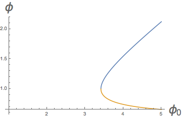

CPPI\(^{\dagger}\) is a risk management tactic that can be applied to any investment portfolio. The approach entails banking a percentage of profits whenever a new all time high wealth is achieved, thereby ensuring that a portfolio's drawdown never goes below some maximum percentage. Here, I review CPPI and then consider the mean growth rate of a CPPI portfolio. I find that in a certain, common limit, this mean growth is given by a universal formula, (\ref{cppi_asymptotic_growth}) below. This universal result does not depend in detail on the statistics of the investment in question, but instead only on its mean return and standard deviation. I illustrate the formula's accuracy with a simulation in python.
\(\dagger\) CPPI = "Constant Proportion Portfolio Insurance"
Follow @efavdb
Follow us on twitter for new submission alerts!
Introduction
The drawdown of an investment portfolio at a given date is equal to
the amount of money lost relative to its maximum held capital up to
that date. This is illustrated in the figure at right -- a portfolio
that once held $100 now holds only $90, so the drawdown is currently
$10.  CPPI is a method that can be applied to guarantee that the maximum
fractional drawdown is never more than some predetermined value -- the
idea is to simply squirrel away an appropriate portion of earnings
whenever we hit a new maximum account value, and only risk what's left
over from that point on. For example, to cap the max loss at 50%, one
should only risk 50% of the initial capital and then continue to bank
50% of any additional earnings whenever a new all time high is
reached.
CPPI is a method that can be applied to guarantee that the maximum
fractional drawdown is never more than some predetermined value -- the
idea is to simply squirrel away an appropriate portion of earnings
whenever we hit a new maximum account value, and only risk what's left
over from that point on. For example, to cap the max loss at 50%, one
should only risk 50% of the initial capital and then continue to bank
50% of any additional earnings whenever a new all time high is
reached.
According to Wikipedia, the first person to study CPPI was Perold, who derived the statistical properties of a CPPI portfolio's value at time \(t\), assuming the underlying stochastic investment follows a Wiener process. I was introduced to the CPPI concept by the book "Algorithmic Trading" by Ernest Chan. This book implicitly poses the question of what the mean return is for general, discrete investment strategies. Here, I show that a universal formula applies in this case, valid at low to modest leverages and small unit investment Sharpe ratios -- this result is given in equation (\ref{cppi_asymptotic_growth}) below.
The post proceeds as follows: In the next section, I define some notation and then write down the limiting result. In the following section, I give a numerical example in python. Finally, an appendix contains a derivation of the main result. This makes use of the universal limiting drawdown distribution result from my prior post.
CPPI formulation and universal mean growth rate
In this section, I review the CPPI strategy and give the limiting mean return result. Consider a portfolio that at time \(t\) has value,
where \(W\) is our total wealth, \(S\) is the banked (safe) portion, and \(\\Gamma\) is the portion we are willing to bet or gamble. The savings is set so that each time we reach a new all time high wealth, \(S\) is adjusted to be equal to a fraction \(\Pi\) of the net wealth. When this is done, the value of \(\Gamma\) must also be adjusted downwards -- some of the investment money is moved to savings. Before adjustment, the result of a bet moves \(\Gamma\) to
Here, the tilde at left indicates this is the value before any reallocation is applied -- in case we have reached a new high, \(g_t\) is a stochastic investment outcome variable, and \(f\) is our "leverage" -- a constant that encodes how heavily we bet on the game. I will assume all \(g_i\) are independent random variables that are identically distributed with distribution \(p(g)\). I will assume that \(f\) is a fixed value throughout time, and will write
This re-parameterization helps to make the math work out more nicely below. It is also motivated by the Kelly formula, which specifies the gambling leverage that maximizes wealth at long times (here, setting \(\phi \to 1\) gives the Kelly exposure).
The equations above define the CPPI scheme. The main result of this post is that in the limit where the leverage is not too high, and the stochastic \(g\) has small Sharpe ratio (mean return over standard deviation), the mean log wealth at time \(t\) satisfies
This result can be used to estimate the mean growth of a portfolio to which CPPI is applied. Before illustrating its accuracy via a simulation below, I highlight a few points about the result:
- The fact that (\ref{cppi_asymptotic_growth}) is universal makes it very practical to apply to a real world investment: Rather than having to estimate the full distribution for \(g\), we need only estimate its mean and variance to get an estimate for the portfolio's long-time mean return.
- The mean return (\ref{cppi_asymptotic_growth}) is equivalent to that found by Perold for Gaussian processes -- as expected, since the result is "universal".
- The maximum return at fixed \(\Pi\) is again obtained at \(\phi = 1\), the Kelly maximum.
- If \(\phi = 1/2\), we are at twice Kelly exposure and the mean return is zero -- this a well known result. At \(\phi < 1/2\), we are above twice Kelly and the return is negative.
- The mean return is reduced by a factor \((1-\Pi)\) -- the fraction of new high wealths we are exposing to loss. It is interesting that the result is not suppressed faster than this as we hold out more wealth, given that we have lower exposure after a loss than we would otherwise.
- One can ask what \(\phi\) gives us the same mean return using CPPI as we would obtain at full exposure using \(\phi_0\). E.g., consider the case of \(\Pi = 1/2\), which corresponds to insuring that half of our wealth is protected from loss. Equating the mean gains of these two gives
\begin{eqnarray} \frac{1}{2} \frac{(2 \phi -1)}{2 \phi ^2} = \frac{(2 (2)-1)}{2 (2)^2} = \frac{3}{8}. \end{eqnarray}
The two roots for \(\phi\) are plotted versus \(\phi_0\) below.  Notice that we can't find solutions for all \(\phi_0\) -- it's not possible to match the mean return for high leverages at full exposure when we force protection of some of our assets.
{kind=link}
We now turn to a simulation example.
Python CPPI simulation
In the code below, we consider a system where in each step we either "win" or "lose": If we win, the money we risk grows by a factor of \(f \times 1.02\), and if we lose, it goes down by a factor of \(f \times 1 / 1.02\). We take the probability of winning to be \(0.65\). This game has a Sharpe ratio of \(0.32\), small enough that our approximation should work well. The code below carries out a simulated repeated investment game over 100 trials -- we hope that it is clear what is happening at each step.
import numpy as np
# investment definitions -- a random walk
LIFT_ON_WIN = 1.02
LIFT_ON_LOSS = 1 / LIFT_ON_WIN
P_WIN = 0.65
P_LOSS = 1 - P_WIN
g_minus_1_bar = P_WIN * (LIFT_ON_WIN - 1) + P_LOSS * (LIFT_ON_LOSS - 1)
var_g = P_WIN * (LIFT_ON_WIN - 1) ** 2 + P_LOSS * (LIFT_ON_LOSS - 1) ** 2 - (g_minus_1_bar) ** 2
full_kelly = g_minus_1_bar / var_g
sharpe = g_minus_1_bar / np.sqrt(var_g)
print 'Sharpe ratio of g unit bet: %.4f' % sharpe
def simulate_once(phi, pi, steps):
initial_value = 1.0
f = full_kelly / phi
current_nav = initial_value
current_max = current_nav
for _ in range(steps):
# update current max
current_max = max(current_nav, current_max)
# calculate current effective nav
current_drawdown = current_max - current_nav
gamma = current_max * (1 - pi) - current_drawdown
# play round of investment game
dice_roll = np.random.rand()
win = (dice_roll \< P_WIN)
loss = 1 - win
g = LIFT_ON_WIN * win + LIFT_ON_LOSS * loss
nav_change = gamma * f * (g - 1)
# update wealth
current_nav += nav_change
return current_nav
end_results = []
# kelly and cppi properties
PHI = 10.0
PI = .75
STEPS = 1000
TRIALS = 100
# simulation loop
for trial in range(TRIALS):
end_nav = simulate_once(phi=PHI, pi=PI, steps=STEPS)
end_results.append(end_nav)
theory = (g_minus_1_bar ** 2 / var_g) * (1 - PI) * (2 * PHI - 1) / (2 * PHI ** 2)
print 'Experiment: %2.5f'% (np.mean(np.log(end_results)) / STEPS)
print 'Theory: %2.5f'% theory
# OUTPUT:
# Sharpe ratio of g unit bet: 0.3249
# Experiment: 0.00251
# Theory: 0.00251
The last lines above show the output of our print statements. In particular, the last two lines show the mean growth rate observed over the 100 trials and the theoretical value (\ref{cppi_asymptotic_growth}) -- these agree to three decimal places.
Using a loop over \(\phi\) values, I used the code above to obtain the plot below of mean returns vs \(\phi\). This shows that the limiting result works quite well over most \(\phi\) -- though there is some systematic, modest discrepancy at small \(\phi\). This is expected as the quadratic expansion for log wealth used below starts to break down at high exposures. Nevertheless, the fit is qualitatively quite good at all \(\phi\). This suggests that our result (\ref{cppi_asymptotic_growth}) can be used for quick mean return forecasts for most practical, applied cases of CPPI.
{kind=link}
Appendix: Derivation of mean return
We give a rough sketch here of a proof of (\ref{cppi_asymptotic_growth}). Our aim is to quickly get the universal form in a relatively clean way. Note that these results may be new, or perhaps well known to finance theorists -- I'm not sure.
To begin let us define
This is the maximum \(\Gamma\) seen to date at time \(t\). Necessarily, this is the value of \(\Gamma\) as of the most recent all time high preceeding \(t\). If \(\Gamma_t < \Gamma^*_t\), we say that we are in drawdown by value \(\Gamma^*_t - \Gamma_t\). At all times, we have
This result holds because the saved portion is \(\Pi\) times the net wealth when we reach a new high and \(\Gamma^*\) is what's left over, \((1 - \Pi)\) times the net wealth at that time.
From the above definitions, our net wealth after a step is given by
Iterating and taking the logarithm we obtain
The series expansion in the second line can be shown to converge quickly provided we have selected a leverage \(f\) that always results in a small percentage change in our net wealth each step. Note that it is the breakdown of this expansion that causes the slight divergence at low \(\phi\) in our last plot above.
Our aim is to evaluate the average of the last equation. The first key point needed to do this is to note that at step \(i\), we have \(g_i\) and \(\Gamma_i / \Gamma_i^*\) independent (the outcome of the unit bet doesn't depend on how much we have to wager at this time). This allows us to factor the averages above into one over \(g\) and over the \(\Gamma_i / \Gamma_i^*\) distribution. The former is relatively easy to write down if we assume some properties for \(f\) and \(g\). To proceed on the latter, we note that
is the drawdown of a random walk, with steps defined by (\ref{gamble_eom_cppi}). We have argued in our last post that the tail of the distribution of this drawdown distribution is such that
where \(\alpha\) is given in that post as an implicit function of the statistics of \(g\). This tail form will hold almost everywhere when the Sharpe ratio is small. We will assume this here.
Using the change of variables rule, we get
Again, this is an approximation that assumes we spend relatively little time within one jump from the current all time high -- a result that will hold in the small Sharpe ratio limit. With this result, we obtain
Here, \(_2F_1\) is the hypergeometric function. Similarly,
Note that both of the last two lines go to one as \(\rho \to 0\), the limit where we invest our entire net worth and protect nothing. In this case, the growth equations are just those for a fully invested account. If you plug the last two results into the second line of (\ref{A1}), you get an expression for the mean return.
To get the above results, we assumed a small Sharpe ratio. Therefore, to simplify things, we can use the value of \(\alpha\) that we derived in our last post that is valid in this limit. This was given by \(\alpha \sim 2 \mu / \sigma^2\), where \(\mu\) and \(\sigma\) and mean and standard deviation of the random walk. We now evaluate these to get an expression for \(\alpha\) in terms of the statistics of \(g\). First, we note that the mean drift of \(\log \Gamma\) is given by
The last line follows from the assumption that the Sharpe ratio for \(g -1\) is small, so that
Similarly, one can show that
This gives
The second term in the first line can be neglected because we require the change in value to be a small fraction of our net wealth. We anticipate applying the algorithm to values of \(f\) of order \(f \sim O( \frac{ \langle g -1 \rangle }{ \text{var}(g)})\), so the above is \(O(1)\). If we plug these results into the limiting form for \(\alpha\) and use (\ref{3}) for \(f\), we get
We won't show the details, but if you plug (\ref{A2}), (\ref{A3}), and (\ref{A4}) into (\ref{A1}), this gives (\ref{cppi_asymptotic_growth}). To get there, you need to show that a big collapse of terms occurs in the two hypergeometric functions. This collapse can be derived using the series expansion for \(_2F_1\) in about one page. The collapse of terms only occurs in the small Sharpe ratio limit, where \(\alpha\) is given as above. We note that for some walks, an exponential form holds everywhere. In this case, the more general expression using \(_2F_1\) applies even at high Sharpe ratios -- though we still require \(f\) small.